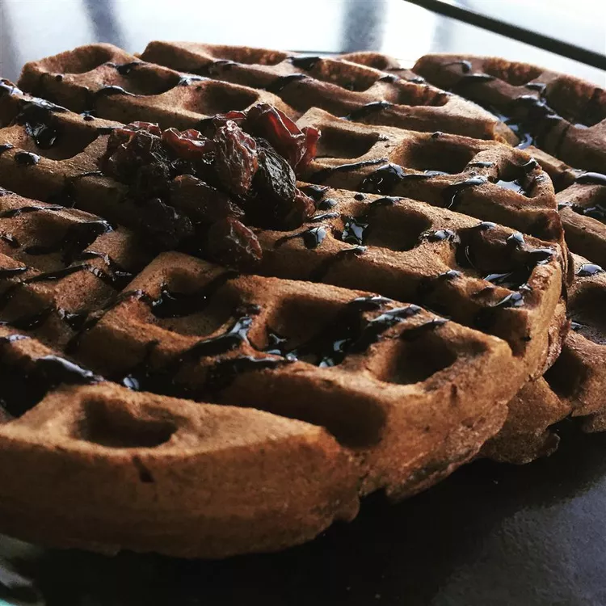

Chocolate waffles

It is the best and tasty chocolate waffles in the world
I always begged my mom to make chocolate waffles for me when I was growing up. Now I make them for my two daughters and they absolutely love them!
Ingredients
- 1 ½ cups all-purpose flour
- ½ cup white sugar
- 3 tablespoons unsweetened cocoa powder
- 3 teaspoons baking powder
- ½ teaspoon salt
- 1 cup milk
- 2 large eggs
- 4 tablespoons butter, melted
Steps
- Preheat a waffle iron.
- Make waffles: Stir together flour, sugar, cocoa, baking powder, and salt in a large mixing bowl. Stir in milk, eggs, and butter until the mixture is smooth.
- Make hard sauce: stir together softened butter, confectioners' sugar, vanilla extract, and milk. Sauce should be fairly stiff. Set aside.
- Spray preheated waffle iron with nonstick cooking spray. Pour waffle mix onto hot waffle iron. Cook until golden brown. Serve hot with hard sauce.
Go to main page